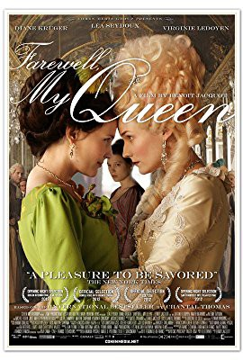
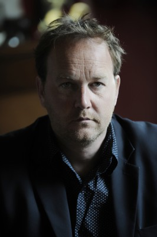
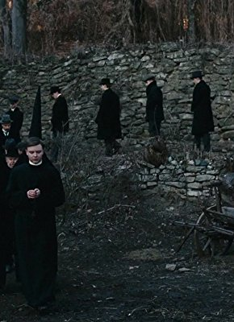

#8955 Leb wohl, meine Königin!
Alternativ: Farewell, My Queen (Englischer Titel)
 
 IMDB-Wertung: 6.3 / 10
IMDB-Wertung: 6.3 / 10  Metascore: 0
Metascore: 0 
In July 1789, the French Revolution is rumbling. Far from the turmoil, at the Château de Versailles, King Louis XVI, Queen Marie-Antoinette and their courtiers keep on living their usual carefree lives. But when the news of the storming of the Bastille reaches them, panic sets in and most of the aristocrats and their servants desert the sinking ship, leaving the Royal Family practically alone. Which is not the case of Sidonie Laborde, the Queen's reader, a young woman, entirely devoted to her mistress; she will not give her up under any circumstances. What Sidonie does not know yet is that these are the last three days she will spend in the company of her beloved Queen...
Jahr: 2012
Dauer: 99 Minuten
FSK:
Land: Frankreich Studio: Capelight PicturesTonspuren: DTS - ,
Untertitel: Deutsch,
Auflösung: 1080p (1920x824) Größe: 5693 MB
Genre: Drama, Liebe, Geschichte
Regisseur: Benoît Jacquot
Drehbuch: Benoît Jacquot
Soundtrack: Bruno Coulais
Darsteller:
 Léa Seydoux als Agathe-Sidonie Laborde
Léa Seydoux als Agathe-Sidonie Laborde Diane Kruger als Marie Antoinette
Diane Kruger als Marie Antoinette Virginie Ledoyen als La duchesse Gabrielle de Polignac
Virginie Ledoyen als La duchesse Gabrielle de Polignac Noémie Lvovsky als Henriette Genest dite Madame Campan
Noémie Lvovsky als Henriette Genest dite Madame Campan-  Xavier Beauvois als Le roi Louis XVI
 Michel Robin als Jacob-Nicolas Moreau - l'archiviste de Versailles
Michel Robin als Jacob-Nicolas Moreau - l'archiviste de Versailles- Julie-Marie Parmentier als La servante Honorine Aubert
- Lolita Chammah als La domestique Louison
- Jacques Nolot als Monsieur de Jolivet
 Jacques Herlin als Marquis de Vaucouleurs
Jacques Herlin als Marquis de Vaucouleurs- Pierre Rochefort als Le valet Antonin
 Grégory Gadebois als Le comte de Provence
Grégory Gadebois als Le comte de Provence- Francis Leplay als Le comte d'Artois
- Marthe Caufman als La domestique Alice
- Vladimir Consigny als René dit Paolo
- Dominique Reymond als Madame de Rochereuil
- Anne Benoît als Rose Bertin
- Hervé Pierre als L'abbé Hérissé
- Aladin Reibel als L'abbé Cornu de la Balivière
- Martine Chevallier als Madame de la Tour Du Pin
-  Jacques Boudet als Monsieur de la Tour du Pin
- Jean-Chrétien Sibertin-Blanc als Le duc de Polignac
- Jean-Marc Stehlé als Le maréchal de Broglie
- Serge Renko als Le marquis de la Chesnaye
- Gilles David als Le vicaire Moullet
- Rodolphe Congé als L'officier de la Garde Nationale
- Yves Penay als Monsieur de Barentin
- Sonia Joubert als Augustine
- Thibault Sauvaige als Gustav
- Pierre Berriau als Le premier huissier
- Pascal Vannson als Le deuxième huissier
- Maurice Delaistier als Le secrétaire violoniste
- Emmanuelle Bougerol als Une fille de cuisine
- Véronique Nordey als Madame Tournon
- Jean-Pierre Guérin als Monsieur Janvier
- Eric Moreau als Un révolutionnaire (uncredited)
- Luc Palun als (uncredited)
Datei: X:\2012(G-M)\Leb wohl, meine Königin! (2012, FSK, 1920x824).mkv seit 16.05.2018
Festplatte: HD 2012(A-M)
 Es gibt insgesamt 112 Filme in der Gruppe '2012(G-M)'
Es gibt insgesamt 112 Filme in der Gruppe '2012(G-M)'